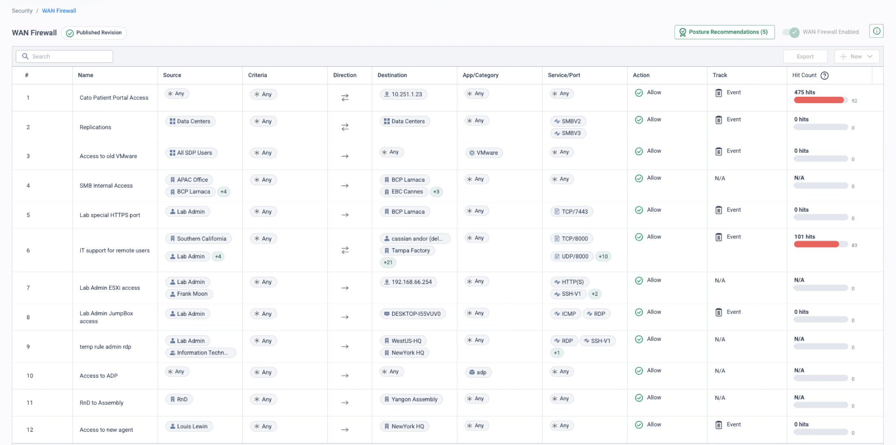

Policy translation is where migrations stall
Sites cut over in an evening; policy is what takes the months. A mature Palo Alto estate carries a zone-based App-ID rulebase layered across Panorama device groups, URL Filtering profiles bolted to those rules, some amount of SaaS Security configuration and — where the add-on was bought — Enterprise DLP data profiles. None of that is a file-format conversion into Cato: it is a functional translation between two different policy models. And there is no tool to hide behind — Expedition, PAN's own config-migration tool, reached end-of-life on 31 December 2024 with no successor, so conversion is an engineering-led workstream that Cato Professional Services schedules explicitly as "Security Policy Conversion".
The process that works runs each policy domain through the same four phases: EXPORT → REVIEW & MAP → DEPLOY (monitor-first) → OPTIMISE. The one rule that matters most sits at the front: never lift-and-shift. Panorama's rule usage data tells you which rules actually fire — rationalise on hit counts first, because translating a fifteen-year-old rulebase verbatim into CMA simply imports the mess.
This page is authored from vendor documentation and Cato PS methodology research; it is not a delivery-verified runbook. Validate mappings, sequencing and scope with Cato Professional Services before committing a conversion plan to a customer.
“How many rules are in the rulebase today — and how many have a non-zero hit count in the last 90 days?” The gap between those two numbers is the clean-up dividend, and it sets the real size of the conversion effort.
PAN-OS security rulebase → Cato firewalls
The construct, and how to export it
PAN-OS rules match on source/destination zone, address, User-ID user or
group, App-ID application and service — with application-default quietly binding
each app to its standard ports. Security profiles (IPS, AV, URL, DLP) attach per rule, and
Panorama layers pre-/post-rules and shared objects across device groups. NAT is a
separate rulebase entirely. Export the lot: CSV/PDF from the Policies tab
(PAN-OS 8.1+), full XML via Save and Export Panorama and Firewall Configurations,
the XML API with XPath per device group, or set-format CLI output for scripted
parsing — and pull rule-usage (hit count / last-hit) data alongside, because it drives the
clean-up.
Mapping to Cato constructs
| PAN-OS construct | Cato construct | Translation notes |
|---|---|---|
| Zone pair: trust → untrust (internet-bound) | Internet Firewall rules | Internet FW default-allows — add explicit blocks to preserve PA's interzone-deny intent |
| Zone pair: site ↔ site / DC (east-west WAN) | WAN Firewall rules (site / VLAN / user / group scope) | WAN FW default-blocks — an allowlist; rebuild only rules that actually hit |
| Intra-site zone rules on one PA | Socket LAN Firewall | Local L3/L4/L7 flows filtered at the Socket, not the PoP |
| App-ID application match | Cato app catalogue app / custom app | Custom App-IDs re-created as custom apps or FQDN/IP objects — signatures do not transfer |
| Service: application-default | Explicit service/port in the Cato rule | Re-pin standard ports explicitly, or the translated rule is broader than the original |
| Address / service objects & groups | Cato IP ranges, FQDN objects, custom services | Flatten Panorama shared vs device-group scoping into one namespace; de-duplicate first |
| User-ID users & groups | User Awareness — SCIM / LDAP-provisioned groups | Groups must exist in CMA before user-scoped rules deploy |
| Per-rule security profile groups | Account-level IPS / NGAM / DNS protection | Protections are platform capabilities, not per-rule attachments — see gotchas |
| NAT rulebase (separate) | Site NAT (outgoing) + Remote / Local Port Forwarding | Audit line-by-line; most branch NAT disappears (the PoP handles internet SNAT) |
Semantic gotchas
application-default broadens silently
A PA rule allowing an app on application-default is port-bound. Translate it without re-pinning the ports and the Cato rule is broader than the original — an invisible policy loosening. Make the port explicit in every translated rule.
Zones don't exist — postures flip
Cato has no zone construct. The world splits into WAN FW (implicit block) and Internet FW (implicit allow) — the opposite default postures to a PA admin's interzone-deny mindset. Decide per rule which surface it lands on; zones with no equivalent (multi-vsys separations) go to the design workshop.
Rules that only varied profiles collapse
PA lets identical match criteria exist twice just to attach different security profiles. On Cato, IPS/NGAM/DNS protection are account-level — those duplicate rules simply collapse away. Expect the translated rulebase to be materially shorter, by design.
Shadowed & NAT-coupled rules
Pre-/post-rule layering plus device-group inheritance breeds shadowed rules — hit counts expose them. And because NAT is a separate rulebase, DNAT-published services must be consciously re-homed to Remote/Local Port Forwarding with external DNS updated, or they go dark at cutover.
Migration strategy
Export with usage data → cull disabled, zero-hit and shadowed rules and collapse device-group duplication → classify each survivor to Internet FW, WAN FW or Socket LAN FW → rebuild in CMA's ordered, first-match rulebase with ports re-pinned and objects flattened → deploy with event tracking on, and tighten to block once events confirm the scope matches the original intent.
URL Filtering → Cato Internet Firewall categories
The construct, and how to export it
URL Filtering (and Advanced URL Filtering) lives in profiles attached to security rules: a per-category action matrix — allow, alert, continue, override, block — plus custom URL categories and lists, scoped per device group. The profiles come out in the same Panorama XML/CSV export as the rulebase; capture the custom category lists and the per-category actions, because the actions are the policy.
Mapping to Cato constructs
| PAN-OS construct | Cato construct | Translation notes |
|---|---|---|
| URL Filtering profile on a rule | Ordered Internet Firewall rules on URL categories | Profile-per-rule becomes ordered category rules — one policy surface, first match wins |
| Predefined PAN-DB categories | Cato URL categories | Taxonomies differ — map by risk intent, never name-for-name |
| Custom URL categories / lists | Cato custom categories, FQDN / domain objects | Rebuild the lists; verify wildcard semantics behave the same |
| block action | Block | Direct translation |
| continue / override actions | User-proceed (prompt) behaviour | Map click-through intent where the customer still wants it; many estates drop it at migration |
| alert action | Allow with event tracking | Preserves the audit intent and feeds the validation loop |
| Credential theft / safe search controls | Map intent — design review | Feature-level parity is not the goal; agree the outcome each control served |
Semantic gotchas
- Category taxonomy mismatch. PAN-DB and Cato categorise differently; a name-for-name mapping silently changes what is blocked. Build an explicit category matrix — PA action per category → Cato action — and review it with the customer.
- TLS inspection gates fidelity. Without TLSi, matching is domain/SNI level only — full-path URL matching and inline content decisions need decryption. Follow Cato's phased TLSi enablement (block QUIC, deploy the root certificate, start with high-risk/low-impact categories) as a prerequisite workstream, and note TLSi is not supported for Android devices — check the mobile estate early.
- Alert-heavy profiles. Estates that ran most categories on alert were doing visibility, not enforcement — translate those to allow+track, not to blocks the business never actually enforced.
Migration strategy
Build the category-action matrix from the export, rebuild custom categories, and stage enforcement: categories PA blocked stay blocked from day one; everything else deploys as allow-with-tracking while TLSi phases roll out, then tightens in OPTIMISE once events show the true traffic profile.
SaaS Security → Cato CASB
The construct, and how to export it
SaaS Security comes in two halves: inline (App-ID-based SaaS visibility and controls — sanctioned/unsanctioned tagging, risk attributes, upload/download restrictions) and API (out-of-band scanning of data at rest in sanctioned apps). In most estates the deployment is modest — often little more than app tags and a handful of inline rules. The inline configuration exports with the rulebase; API-side policy lives in its own console and is captured as a policy inventory. Either way, this domain migrates by intent, not rule-for-rule.
Mapping to Cato constructs
| PAN-OS construct | Cato construct | Translation notes |
|---|---|---|
| App-ID SaaS visibility & risk attributes | Cato app catalogue risk scores + Cloud Apps Dashboard | Shadow-IT discovery is native — no profile to configure before data appears |
| Sanctioned / unsanctioned app tags | App-level allow / block rules (Internet FW + CASB) | Re-express the sanctioned list as policy; validate it against discovered usage first |
| Inline controls (e.g. block upload to unsanctioned apps) | CASB granular activity controls | Activity-level rules (browse vs upload vs download) need TLS inspection to see the activity |
| SaaS Security API (data at rest) | Scope separately with Cato PS | Inline CASB migrates now; data-at-rest scanning is its own design conversation, not a blocker |
Semantic gotchas & migration strategy
Don't promise control-for-control parity — the two products slice SaaS activity differently, and a barely-configured SaaS Security estate is an opportunity, not a template. Run discovery first: let the Cloud Apps Dashboard accumulate a few weeks of real usage, compare it with the PA sanctioned-app list, and rebuild only the controls the business still wants. Then apply the standard discipline — activity controls in monitor first, block once events confirm who and what they touch. TLS inspection is the fidelity prerequisite throughout.
Enterprise DLP → Cato DLP profiles
The construct, and how to export it
Enterprise DLP is a cloud-delivered add-on licensed per firewall: data profiles combine predefined patterns (PCI, PII, source code and similar) with custom regex/keyword patterns and — in mature deployments — EDM datasets, attached to security rules through profiles. The profile definitions can be captured from the management UI and config export; EDM datasets cannot be meaningfully exported and must be rebuilt from the authoritative source data.
Mapping to Cato constructs
| PAN-OS construct | Cato construct | Translation notes |
|---|---|---|
| Data profiles | Cato DLP profiles | Rebuild from data-type intent — the profile is the unit of translation |
| Predefined data patterns (PCI, PII…) | Cato predefined data types | Map by regulated-data intent; verify coverage with test files, not datasheets |
| Custom regex / keyword patterns | Cato custom data types | Port the expressions, then re-tune — matching engines differ |
| EDM datasets | Rebuild from source data | Never attempt to port the dataset; regenerate from the system of record |
| Per-rule DLP profile attachment | Cato DLP rules scoped by user / app / direction | Scope by SCIM group and app — dependencies on identity provisioning apply |
| Alert / block response actions | Monitor (allow + event) first, then block | Enforce only after the false-positive rate is known on Cato's engine |
Semantic gotchas
- Detection engines differ. Confidence thresholds, match counts and proximity logic do not transfer between engines — a profile that was quiet on PA can be noisy on Cato (or vice versa). The false-positive tuning effort restarts; budget for it.
- TLS inspection is the gate. DLP inspects content; without TLSi there is very little content to inspect. Sequence the TLSi phases ahead of DLP enforcement.
- Scope creep at translation. Be explicit about direction (upload vs download), app scope and exclusions when rebuilding rules — the defaults on the two platforms are not the same.
Migration strategy
Rebuild profiles from data-type intent, run everything in monitor for a few weeks, review matches in the Data Protection Dashboard and events, tune data types and thresholds, then enforce block on the highest-confidence rules first — exactly the monitor-then-block progression Cato recommends for its threat-prevention stack.
Before → after: three rules translated
These tables are composed to show the translation pattern; they are not screenshots of either console — though the screenshot beneath the after-table is the real CMA console, captured from a live demo tenant. Rule and object names are generic — in the workshop, run the same exercise on the customer's own rulebase export.
Before — PAN-OS security policy (illustrative)
| # | Name | Zone (from→to) | Source | Application | Service | Profile group | Action |
|---|---|---|---|---|---|---|---|
| 1 | Allow-Office-365 | trust → untrust | grp-all-staff | ms-office365 | application-default | PG-Standard-Threat (IPS, AV, URL) | Allow |
| 2 | Allow-General-Web | trust → untrust | grp-all-staff | web-browsing, ssl | application-default | PG-Web-Strict — URL profile blocks gambling, hacking | Allow |
| 3 | Legacy-App-8080 | trust → untrust | grp-legacy-users | any | tcp-8080 | none | Allow — zero hits in 90 days; cull candidate |
| 4 | Deny-All | any → any | any | any | any | none | Deny — log at session end |
Note the classic PAN-OS shapes: the URL block lives inside a profile on an allow rule, not in the rule action; the ports are bound silently by application-default; and the explicit Deny-All exists mostly to log what the interzone default would drop anyway.
After — Cato CMA (illustrative)
Both surviving internet-bound rules land on the Internet Firewall — ordered, first-match, with event tracking on from day one.
| # | Name | Source | App/Category | Service | Action | Track |
|---|---|---|---|---|---|---|
| 1 | Allow Office 365 IPS & Anti-Malware apply platform-wide — no profile group to attach | All Staff (SCIM group) | Office 365 (app catalogue) | TCP 443, 80 — re-pinned | Allow | Event |
| 2 | Block risky web categories | Any | Gambling · Hacking (URL categories) | Any | Block | Event |
| — | Legacy-App-8080 — not rebuilt. Zero hits in 90 days: culled at rationalisation, so it never reaches CMA. | |||||
| — | Deny-All — unnecessary. The Internet Firewall is a blocklist with implicit allow — the deny intent is carried by the explicit block rule above — and the WAN Firewall is an allowlist whose implicit block is the cleanup rule. | |||||

What changed in translation
- Zones became rule placement. trust → untrust told PAN-OS where the traffic flowed; on Cato each rule consciously lands on a surface — these two on the Internet Firewall, east-west equivalents on the WAN Firewall, local flows on the Socket LAN Firewall.
- Profile groups became platform layers. PG-Standard-Threat has no translation: IPS, NGAM and DNS protection run account-wide rather than attaching per rule. And the URL block that lived inside PG-Web-Strict on an allow rule became an ordered block rule of its own.
- application-default became explicit ports. Cato's app awareness identifies Office 365, but PA's silent app-to-port binding does not carry over — TCP 443/80 is re-pinned in the translated rule so it is no broader than the original.
- The default postures flipped. PAN-OS ends in interzone deny; the Internet Firewall ends in implicit allow and the WAN Firewall in implicit block — which is why Deny-All translates to nothing, and why every explicit block must be deliberate.
The disciplines that hold all four domains together
Design for the opposite defaults
WAN Firewall is an allowlist (implicit block); Internet Firewall is a blocklist (implicit allow). Every translated rule must land consciously on one surface — settle this in the design workshop, never at cutover.
Stage TLS inspection early
TLSi is the fidelity prerequisite for SWG path matching, CASB activity controls and DLP content inspection. Run Cato's phased enablement — QUIC blocked, root certificate deployed, categories widened gradually — as its own workstream.
Monitor, then block
Every domain follows the same progression: deploy translated rules with tracking, watch events, then tighten to block. Enforcement earned on evidence never triggers the day-one helpdesk storm.
Identity before user-scoped rules
Rules referencing AD groups need those groups in CMA first — plan SCIM/Entra ID (or LDAP sync) provisioning ahead of policy deployment, and confirm User-ID → User Awareness parity before user-scoped rules enforce.
Validate with events & hit counts
Panorama hit counts sized the clean-up; CMA events prove the translation. Filter events per translated rule and compare against the original's traffic profile before and after enforcement.
Sequence the domains
Baseline firewall first, TLSi phases next, then SWG tightening, CASB controls and DLP enforcement — each domain's fidelity depends on the one before it.
One pipeline, four domains
Every domain — firewall rules, URL filtering, SaaS controls, DLP profiles — moves through the same pipeline. The clean-up filter in the middle is where the effort pays back: dead rules are discarded on hit-count evidence and never reach CMA.
Running the policy workshop
The session works best walked from the customer's own artefacts. Ask for a sanitised Panorama rulebase export with rule-usage columns before the meeting, and anchor every CMA screen to a rule they recognise.
-
Start from their export
Open the rulebase CSV and sort by hit count. Agree the cull candidates live in the room — disabled, zero-hit, shadowed — and size the real conversion scope together. This reframes the migration from "port 1,000 rules" to "translate the ones that matter".
-
Show where internet-bound rules land
Security → Internet Firewall
Walk the ordered, first-match rulebase: URL categories, app objects, actions and event tracking. Call out the default-allow posture and show the explicit blocks that recreate their interzone-deny intent.
-
Show the WAN allowlist
Security → WAN Firewall
The opposite posture: implicit block, with rules scoped by site, VLAN, user and group. Map one of their zone-pair rules onto a WAN FW rule live.
-
Position TLS inspection as the gate
Security → TLS Inspection
Show the wizard and the phased approach — and explain why TLSi fidelity gates SWG path matching, CASB activity controls and DLP content inspection. This is where "decryption is rebuilt, not ported" lands.
-
Let discovery challenge the sanctioned list
Monitor → Cloud Apps Dashboard
Show discovered SaaS usage and risk scores, then open Security → CASB for a granular control (allow browse, block upload). Compare with their PA sanctioned-app tags — the gaps make the case for intent-based rebuild.
-
Build a DLP profile live — in monitor
Security → DLP Configuration
Assemble a profile from predefined data types (PCI, PII), scope it to a user group and direction, and leave it in monitor. Explain the tune-then-enforce timeline honestly.
-
Close on the validation loop
Monitor → Events
Filter events to a rule you created during the session: every match, fully attributed. Events are the new hit counts — the same evidence that sized the clean-up now proves the translation.
Resources
Documentation
- Save & export Panorama configurations (PAN docs)
- Exporting rulebases to CSV via the XML API (pan.dev)
- Internet & WAN Firewall policy recommendations (KB)
- Best practices for TLS Inspection (KB)
- Monitor-then-block threat prevention best practices (KB)
- Provisioning users with SCIM (KB)
- DLP — platform page · CASB — platform page